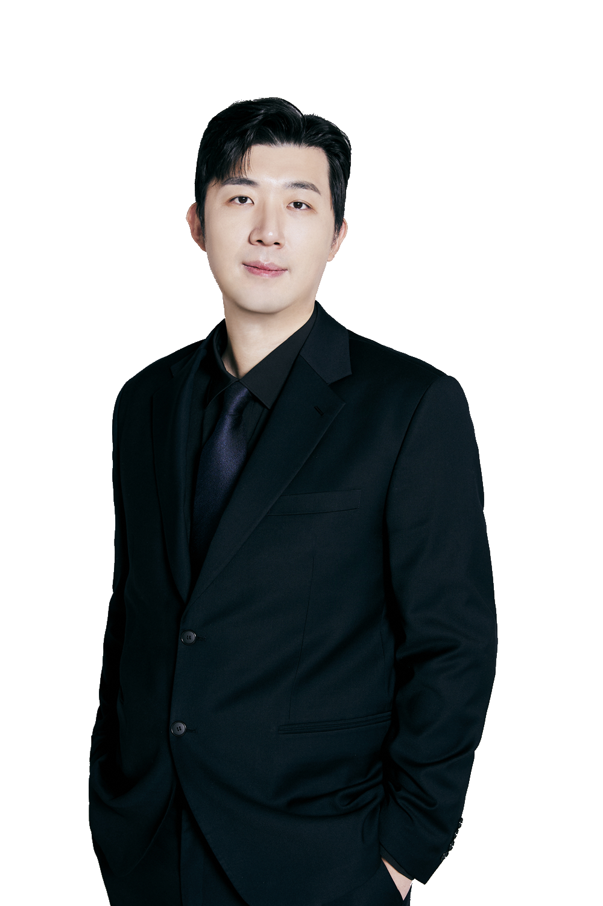
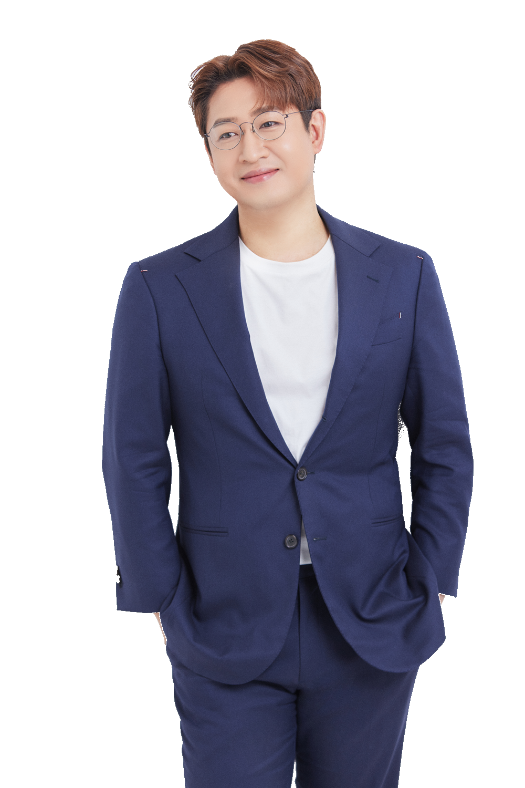
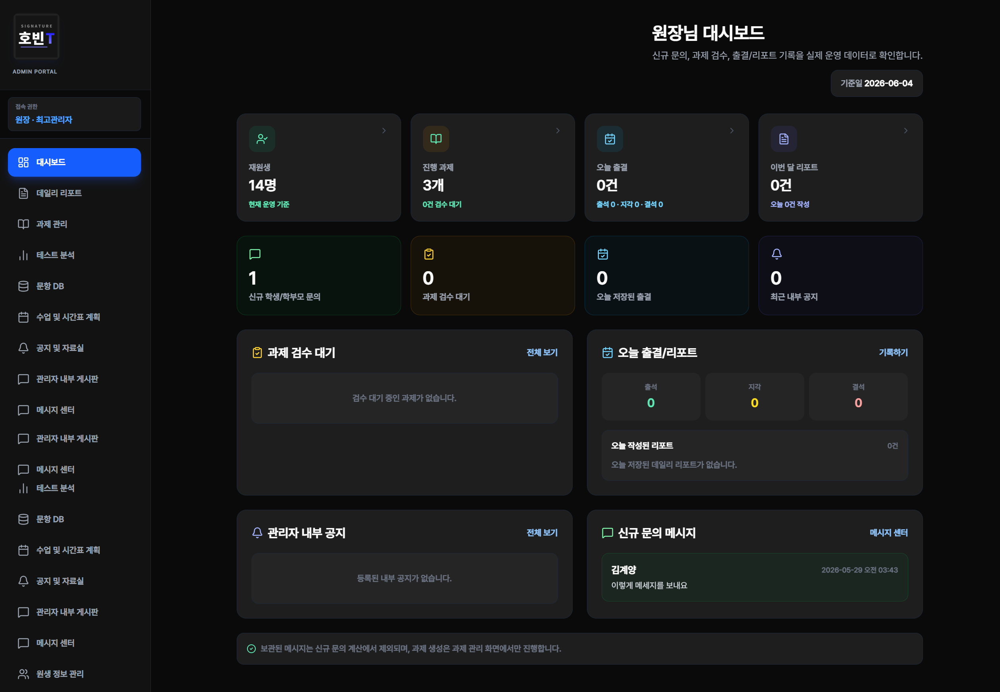
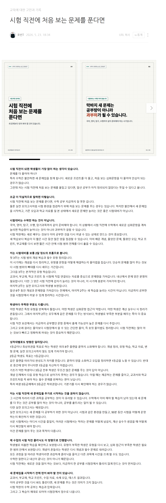
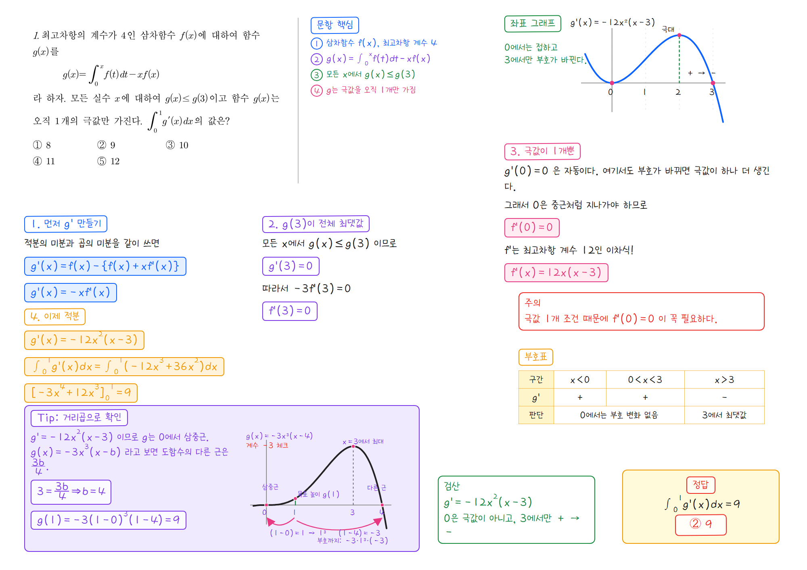

초강스
바이브코딩
초급 과정
수학 강사의 업무를 AI와 함께 구조화하는 첫 실습
연사: 류용수T · 한호빈T
오늘의 흐름
수학강사 업무에서 출발해
AI 핸들링과 Codex 실습으로 이어갑니다.
LLM vs IDE
초강스 바이브코딩 스터디 2회 홍보 페이지
수학강사가 하는 일:
강의 외에도 할 일이 많습니다.
손이 부족하면
조교를 구인합니다.
조교의 업무는 강사의 판단을 보조하는 단순 반복 업무가 많습니다.
AI는 사람 조교를 대체한다기보다, 반복 업무의 초안과 정리 과정을 효율화합니다.
이제는 AI가
업무를 효율화시킬 수 있습니다.

학생 관리앱
과제, 출결, 리포트, 문항DB를 강사의 운영 방식에 맞춘 도구로 정리합니다.

블로그 자동화
수업 정보와 생각을 컨텍스트로 저장해 주제 선정, 글 작성, 카드뉴스 생성을 돕습니다.

손풀이 AI
문제 해설, 핵심 아이디어, 그래프, 검산, 학생 주의점을 구조화합니다.
AI 팁은 빨리 낡고,
업무 구조는 오래 남습니다.
6개월 뒤에도 남길 것
- 특정 프롬프트, 도구 이름, 모델 순위는 금방 바뀐다.
- 컨텍스트 설계, 검증 루프, 하네스는 도구가 바뀌어도 남는다.
- AI 학습은 저장보다 작은 실행으로 옮겨가야 한다.
손풀이 AI도 질문보다 구조가 중요합니다.
- 문제와 학생 수준을 정리한다.
- 해설 형식과 검증 기준을 문서화한다.
- 결과를 보고 다시 고치는 루프를 만든다.
- 작업 결과를 다음 수업 준비에 재사용한다.
참고: 바이브랩스, 「카파시는 옳았다 — AI 조언의 90%가 6개월 안에 사라지는 진짜 이유」, 2026.06.04
프롬프트 엔지니어링은
한 번의 요청을 잘 쓰는 기술입니다.
좋은 질문은 좋은 초안을 만들지만, 도구가 바뀌어도 남는 구조는 아직 아닙니다.
컨텍스트 엔지니어링은
AI가 내 수업을 이해하게 만드는 기술입니다.
도구가 바뀌어도 남는 것은 AI가 참고할 자료와 기준을 정리하는 능력입니다.
하네스 엔지니어링은
AI가 일할 작업환경을 만드는 기술입니다.
참고: 이동훈의 루트AI, 「하네스 엔지니어링 15분 만에 이해시켜드립니다」, 2026.04.16
세 방식은 결과물의
안정성과 반복성에서 차이가 납니다.
| 기준 | 프롬프트 | 컨텍스트 | 하네스 |
|---|---|---|---|
| 초점 | 무엇을 말할까 | 무엇을 보여줄까 | 어떤 환경에서 일하게 할까 |
| 비유 | 좋은 요청 | 필요한 첨부자료 | AI가 일하는 사무실 |
| 결과 | 해설 초안 | 내 학생에게 맞춘 해설 | 검증 가능한 해설 제작 흐름 |
| 장점 | 빠르다 | 맞춤성이 좋다 | 일관성과 검증 가능성이 좋다 |
| 수명 | 가장 빨리 낡음 | 재사용 가능 | 도구가 바뀌어도 남음 |
AI 학습은 최신 팁을 저장하는 일에서, 바뀌는 도구를 끼워 넣을 수 있는 작업 구조를 만드는 일로 옮겨갑니다.
실제 프로젝트의 MD 파일을
AI가 계속 참고하게 만듭니다.
손풀이 AI의 그래프 작성 규칙
그래프를 좌표 기반 그래프와 개형 스케치로 구분하고, 수학적 판단에 필요한 보조그림 기준을 문서로 고정합니다.
graph_drawing_rules.md AI가 그래프를 어떤 기준으로 그릴지 계속 참고하는 규칙 파일AI가 일할 지도와 체크리스트
긴 매뉴얼을 한 번에 넣는 대신, AI가 어디를 보고 어떤 기준으로 검증할지 알려주는 작업 지도를 만듭니다.
README.md 프로젝트 목적, 실행 순서, 검증 명령을 정리한 시작 문서 Agent.md AI 에이전트가 세션마다 읽고 따라야 하는 작업 지휘서컨텍스트는 “무엇을 참고할지”를 정하고, 하네스는 “어떤 순서와 기준으로 반복할지”를 정합니다.
LLM은 답을 만들고,
IDE는 작업공간을 제공합니다.
대화창 중심
- 질문하고 답변을 받는다.
- 결과물을 사람이 복사해서 옮긴다.
- 아이디어, 초안, 설명에 강하다.
작업공간 중심
- AI가 폴더 안의 파일을 읽고 수정한다.
- 실행, 오류 확인, 재수정 루프를 돌린다.
- 작동하는 결과물 제작에 강하다.
모델을 고르는 기준:
성능 순위보다 업무 배치
구현 품질이 좋은 개발 조교
Opus 4.8은 복잡한 추론·장기 에이전트·대규모 코드베이스에, Sonnet 4.6은 성능·비용 균형의 실전 개발 보조에 강한 편입니다.
코드 구현, 리팩토링, 긴 맥락 유지, 프론트엔드 결과물 품질이 좋다는 평가가 자주 언급됩니다.
해설 초안보다 실제 결과물을 깔끔하게 구현해주는 개발 조교.
자료 이해와 빠른 시도에 강한 조교
3.1 Pro는 긴 문서·이미지·영상·코드 저장소 분석에, 3.5 Flash는 빠른 속도와 에이전트·코딩 효율에 강점이 있습니다.
속도, 구글 생태계 연동, 유튜브·문서·이미지 분석 장점이 자주 언급됩니다. 순수 코딩 품질 평가는 갈립니다.
자료를 많이 읽고 빠르게 초안을 여러 번 시도해보는 조사형 조교.
전체 작업을 굴리는 PM형 조교
GPT-5.5는 복잡한 전문 업무·코딩·긴 컨텍스트 작업에 강하고, Codex와 결합해 파일·실행·수정 루프로 연결하기 좋습니다.
기획, 코딩, 디버깅, 검토까지 이어지는 범용성이 강점으로 언급됩니다. 복잡한 앱은 반복 검증이 필요합니다.
목표를 나누고 작업 흐름 전체를 굴리는 프로젝트 매니저형 조교.
이제 함께 실행해봅시다.
여기서부터는 PPT를 멈추고 Codex 화면으로 넘어갑니다.
작업 폴더
실습용 빈 폴더를 열고 범위를 제한합니다.
Codex 실행
폴더 안에서 파일을 만들 수 있게 시작합니다.
홍보 페이지
초강스 바이브코딩 스터디 2회 홍보 페이지를 제작합니다.
질의 응답
결과를 보며 수정 방향과 질문을 함께 정리합니다.